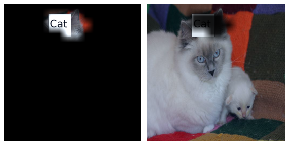
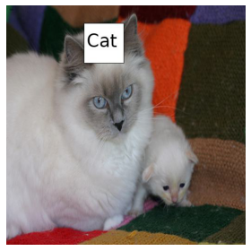
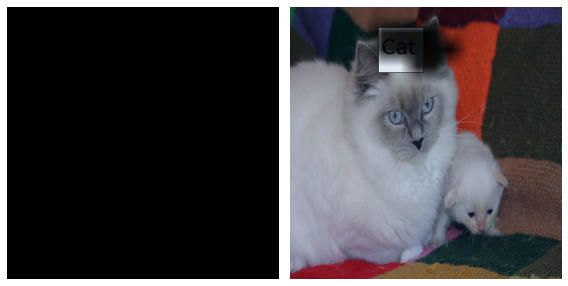
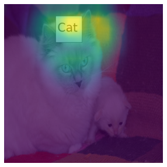
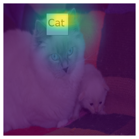
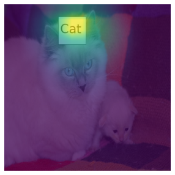
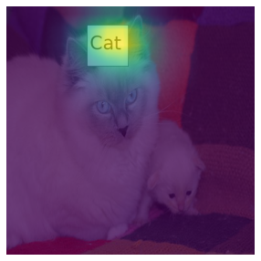
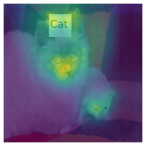
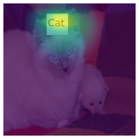
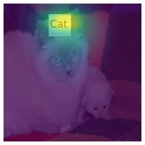

import HCAM
from torchvision.models import *
from fastai.vision.all import *Import
Image Loader
dls = HCAM.Img_loader(fil_path = 'random_pet_one',resize = 512)CAM
lrnr=cnn_learner(dls,resnet34,metrics=error_rate)
lrnr.fine_tune(1)| epoch | train_loss | valid_loss | error_rate | time |
|---|---|---|---|---|
| 0 | 0.124668 | 0.003786 | 0.000677 | 00:33 |
| epoch | train_loss | valid_loss | error_rate | time |
|---|---|---|---|---|
| 0 | 0.002606 | 0.000005 | 0.000000 | 00:43 |
net1=lrnr.model[0]
net2=lrnr.model[1]net2 = torch.nn.Sequential(
torch.nn.AdaptiveAvgPool2d(output_size=1),
torch.nn.Flatten(),
torch.nn.Linear(512,out_features=2,bias=False))net=torch.nn.Sequential(net1,net2)lrnr2=Learner(dls,net,metrics=accuracy) lrnr2.fine_tune(1) | epoch | train_loss | valid_loss | accuracy | time |
|---|---|---|---|---|
| 0 | 0.014341 | 0.000901 | 1.000000 | 00:43 |
| epoch | train_loss | valid_loss | accuracy | time |
|---|---|---|---|---|
| 0 | 0.000014 | 0.000002 | 1.000000 | 00:43 |
x_cat, = first(dls.test_dl([PILImage.create(get_image_files(Path('random_pet_one'))[2])]))
x_cat = x_cat.to('cpu')HCAM
Mode 1
one = HCAM.HCAM(lrnr = lrnr2)one.learner_thresh(Thresh=1600,input_img=x_cat)/home/csy/Dropbox/blog/posts/CAM/HCAM/learners.py:66: UserWarning: To copy construct from a tensor, it is recommended to use sourceTensor.clone().detach() or sourceTensor.clone().detach().requires_grad_(True), rather than torch.tensor(sourceTensor).
power_threshed=np.array(ebayesthresh(FloatVector(torch.tensor(camimg[0].detach().reshape(-1))**2)))
/home/csy/Dropbox/blog/posts/CAM/HCAM/learners.py:67: UserWarning: To copy construct from a tensor, it is recommended to use sourceTensor.clone().detach() or sourceTensor.clone().detach().requires_grad_(True), rather than torch.tensor(sourceTensor).
self.ybar_threshed = np.where(power_threshed>Thresh,torch.tensor(camimg[0].detach().reshape(-1)),0)one.learner_step(Rate=-0.05)one.prob(input_img=x_cat)one.mode_decomp(input_img=x_cat)# one(input_img=x_cat)HCAM.plot(dls,input_img=x_cat,
input_img1=one(input_img=x_cat)['x'],input_img1_res=one(input_img=x_cat)['x_res'],
one=0.3, one_res=0.2)Clipping input data to the valid range for imshow with RGB data ([0..1] for floats or [0..255] for integers).

Mode 2
one.learner_thresh(Thresh=1600,input_img=one(input_img=x_cat)['x_res'])one.learner_step(Rate=-0.05)one.prob(input_img=one(input_img=x_cat)['x_res'])one.mode_decomp(input_img=one(input_img=x_cat)['x_res'])# one(input_img=one(input_img=x_cat)['x_res'])HCAM.plot(dls,input_img=x_cat,
input_img1=one(input_img=x_cat)['x'],input_img1_res=one(input_img=x_cat)['x_res'],
input_img2=one(input_img=one(input_img=x_cat)['x'])['x'],input_img2_res=one(input_img=one(input_img=x_cat)['x_res'])['x_res'],
one=0.35, one_res=0.2, two=0.5, two_res=0.2)


Other Methods
gradcam = HCAM.Other_method(lrnr=lrnr2, status='cpu', cam_method='gradcam',input_img=x_cat)dls.train.decode((x_cat,))[0].squeeze().show()
plt.imshow(gradcam.squeeze(), alpha=0.7)
hirescam = HCAM.Other_method(lrnr=lrnr2, status='cpu', cam_method='hirescam',input_img=x_cat)dls.train.decode((x_cat,))[0].squeeze().show()
plt.imshow(hirescam.squeeze(), alpha=0.7)
gradcamplusplus = HCAM.Other_method(lrnr=lrnr2, status='cpu', cam_method='gradcamplusplus',input_img=x_cat)dls.train.decode((x_cat,))[0].squeeze().show()
plt.imshow(gradcamplusplus.squeeze(), alpha=0.7)ablationcam = HCAM.Other_method(lrnr=lrnr2, status='cpu', cam_method='ablationcam',input_img=x_cat)100%|██████████| 16/16 [00:27<00:00, 1.69s/it]
100%|██████████| 16/16 [00:27<00:00, 1.70s/it]
100%|██████████| 16/16 [00:26<00:00, 1.67s/it]dls.train.decode((x_cat,))[0].squeeze().show()
plt.imshow(ablationcam.squeeze(), alpha=0.7)
xgradcam = HCAM.Other_method(lrnr=lrnr2, status='cpu', cam_method='xgradcam',input_img=x_cat)dls.train.decode((x_cat,))[0].squeeze().show()
plt.imshow(xgradcam.squeeze(), alpha=0.7)eigencam = HCAM.Other_method(lrnr=lrnr2, status='cpu', cam_method='eigencam',input_img=x_cat)dls.train.decode((x_cat,))[0].squeeze().show()
plt.imshow(eigencam.squeeze(), alpha=0.7)
fullgrad = HCAM.Other_method(lrnr=lrnr2, status='cpu', cam_method='fullgrad',input_img=x_cat)Warning: target_layers is ignored in FullGrad. All bias layers will be used insteaddls.train.decode((x_cat,))[0].squeeze().show()
plt.imshow(fullgrad.squeeze(), alpha=0.7)
eigengradcam = HCAM.Other_method(lrnr=lrnr2, status='cpu', cam_method='eigengradcam',input_img=x_cat)dls.train.decode((x_cat,))[0].squeeze().show()
plt.imshow(eigengradcam.squeeze(), alpha=0.7)
layercam = HCAM.Other_method(lrnr=lrnr2, status='cpu', cam_method='layercam',input_img=x_cat)dls.train.decode((x_cat,))[0].squeeze().show()
plt.imshow(layercam.squeeze(), alpha=0.7)